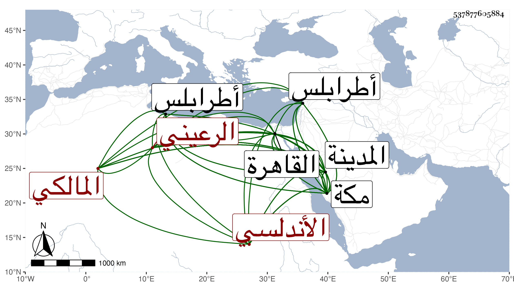

0902Sakhawi.DawLamic.ITO20230111-ara1.EIS1600.537877605884
Biography ID: 537877605884
742
محمد بن عبد الرحمن بن حسن بن محمد أبو عبد الله الرعيني الأندلسي الأصل المولد المالكي نزيل مكة ويعرف هناك كسلفه بالحطاب ويتميز عن شقيق له أكبر منه اسمه محمد أيضا بالرعيني وذاك بالحطاب وإن اشتركا في ذلك لكن للتمييز ويعرف في مكة بالطرابلسي . ولد وقت صلاة الجمعة من العشر الأخير من صفر سنة إحدى وستين وثمانمائة بطرابلس ونشأ بها فحفظ القرآن والرائية والخرازية في الرسم والضبط ثم الرسالة وتفقه فيها يسيرا على محمد القابسي وربما تحذف ألفه وعلى أخيه في المختصر ، ثم تحول مع أبويه وأخوته وجماعتهم إلى مكة سنة سبع وسبعين فحجوا ثم رجعوا وقد توفي بعضهم إلى القاهرة فأقاموا بها سنين ومات كل من أبويه في أسبوع واحد في ذي الحجة سنة إحدى وثمانين بالطاعون واستمر هو وأخوه بها إلى أن عاد لمكة في موسم سنة أربع وثمانين فحجا ثم جاورا بالمدينة النبوية التي تليها وعاد الأخ بعد حجه فيها إلى بلاده وهو إلى المدينة وقرأ بها على الشمس العوفي في العربية ، وكذا حضر عند السراج معمر في الفقه وغيره ثم عاد لمكة فلازم الشيخ موسى الحاجبي وقرأ فيها القرآن على موسى المراكشي ، وصاهر ابن عزم في سنة إحدى وتسعين على ابنته بل أخذ عن الشهاب ابن حاتم وكثر انتماؤه لعبد المعطي وتكرر اجتماعه بي في سنة أربع وتسعين وقبلها وسمع مني وجلس للإقراء في الفقه والعربية وغيرهما ، وولي مشيخة رباط الموفق وباشر التكلم في عمارة وقف الطرحا ، كل ذلك مع الفاقة والعفة ونعم الرجل .
